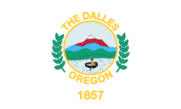
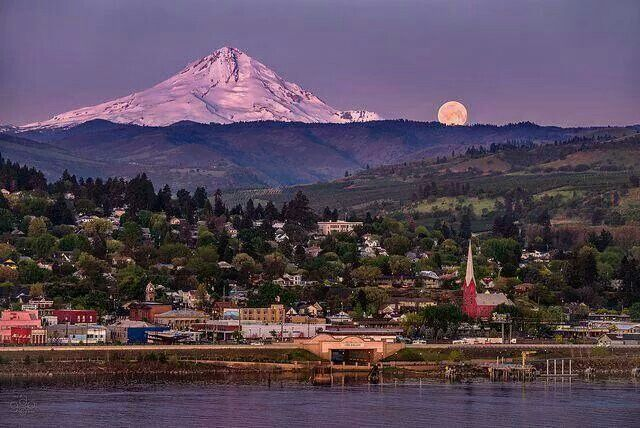

The Dalles, Oregon
Cognito timor Vincit
Knowledge Conquers Fear
| City | Founded |
Region

|
Population | Urbanicity | Affluence |
|---|---|---|---|---|---|
| The Dalles | 1857 | Columbia River Gorge | 15,786 | Rural | Average |
Did you know?

- The Dalles was a trading center for the indigenous peoples of America since as far back as 10,000 years ago. The area is now one of the continent's most important regions for archaeological discoveries. 3
- Lewis and Clark camped in the area around Mill Creek in October of 1805. 3
- The Dalles gets its name from the French word "dalle", meaning "sluice" or "flagstone", referring to the basalt columns formed by the Columbia River. 3
- A local farming couple developed the LaPerm cat breed in 1982, which later became a popular cat breed around the world. 3